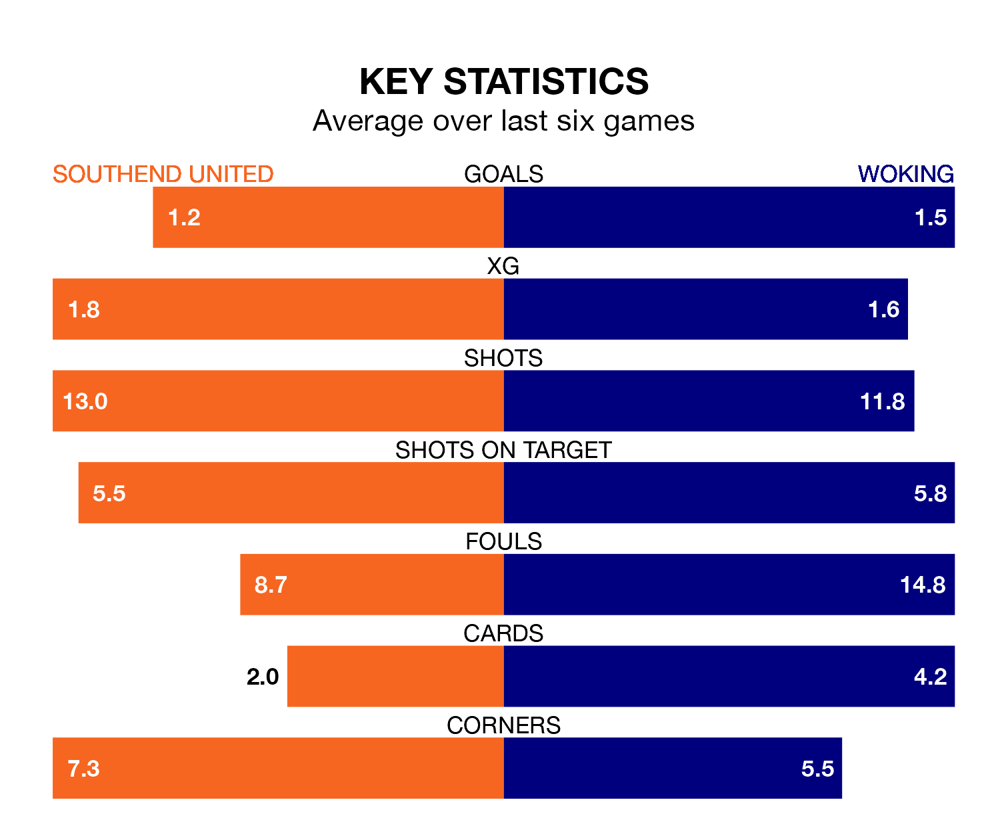

Southend United face Woking on Saturday seeking to protect their formidable unbeaten run in the National League.
The Shrimpers are unbeaten in nine, with four wins and five draws, ahead of the 3pm kick-off.
They face a Woking team who have won four and drawn two over the same number of games.
In the last 10 years, Southend and Woking have played each other on six occasions. They won two each, and they drew twice.
On average, the Shrimpers scored 1.3 goals and the Cardinals 1.3 in those matches.
Their last meeting was on October 7, when Southend won 2-0 away.
With 42 goals in 40 games so far this season, Woking are the league's second-lowest scorers with 1.0 goals per game. But they are conceding fewer than average too, letting in 49 goals at a rate of 1.2 per game.
Southend, meanwhile, are average scorers, with 1.5 goals per game. They have conceded 1.0 goal per game.
United are seventh in the table after 39 games, of which they have won 17 and drawn 10, earning 61 points.
The Cardinals are seven places behind the Shrimpers in 14th, with 13 wins and eight draws putting them on 47 points.
Southend's last match was on March 16, a 0-0 draw against Hartlepool United.
Woking beat Barnet 1-0 last time out, also on March 16, with Kevin Berkoe on the scoresheet.
Updated: 10:19 (UTC), 22/03/24